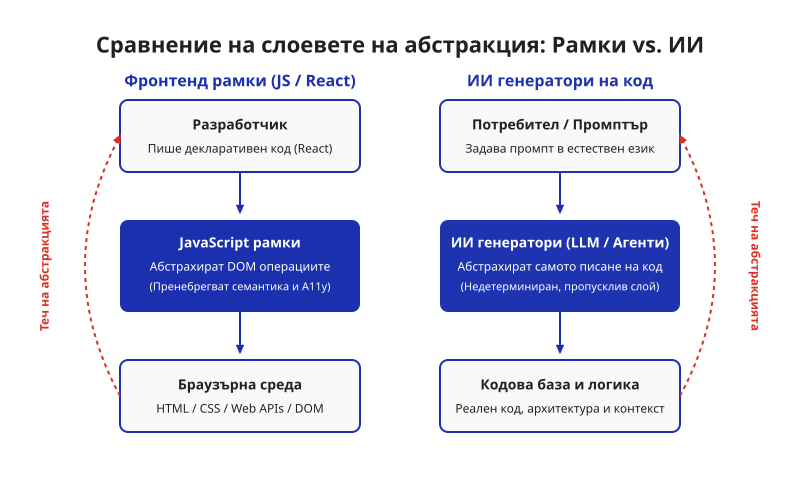

Довежда ли ИИ до повторение на „изгубеното десетилетие“ на фронтенда?
Според софтуерния разработчик Мауро Биег [1], навлизането на генеративния изкуствен интелект в програмирането е напът да повтори грешките от т.нар. „изгубено десетилетие“ на фронтенда. Терминът, популяризиран първоначално от Алекс Ръсел, описва епохата на масовото навлизане на тежките JavaScript библиотеки, които се превърнаха в пропускливи абстракции, отдалечаващи програмистите от браузъра и водещи до лошо потребителско изживяване [1].
Депрофесионализация и пропускливи абстракции
Биег прави ясен паралел между начина, по който React „депрофесионализира“ фронтенд разработката – третирайки браузъра като крайна цел за компилация – и това как ИИ днес абстрахира самото писане на код [1]. Когато тези абстракции работят, те повишават скоростта, но същевременно крият фундаментална сложност. Тъй като генеративният ИИ е недетерминиран, абстракцията често пропуска (leak). Когато това се случи, разработчиците се сблъскват с грешки в среда, която не разбират, тъй като не притежават фундаментални познания за базовите материали [1].

Изображение: Svetni.me / Авторско изображение
От Stack Overflow към ИИ-плява
Тази еволюция е продължение на тенденции, започнали още със Stack Overflow [1]. Преди разработчиците копираха готови отрязъци код без реално разбиране. Днес ИИ автоматизира този процес до безпрецедентни нива, като позволява генерирането на цели кодови бази чрез промптване, което по своята същност представлява търсене в многоизмерно пространство от съществуващи решения [1]. Въпреки че бизнесът е доволен от по-ниските разходи и приема генерираната „ИИ плява“ (AI slop), цената на липсата на дълбоко разбиране се плаща при възникване на сложни системни проблеми.
Урокът от Баухаус
Вместо да се борим срещу неизбежната индустриализация на кода, Биег предлага да се поучим от движението Баухаус [1]. Когато машините заплашват традиционните занаяти, Баухаус обединява занаятчийството с индустриалните процеси, като акцентира върху разбирането на материалите и фокуса върху крайния потребител. Днес разработчиците трябва да гледат на ИИ като на поредния инструмент в кутията, без обаче да изоставят овладяването на базовите технологии като HTML и CSS [1].
Източници:
[1]: Is AI causing a repeat of Frontend's Lost Decade? - Mauro Bieg